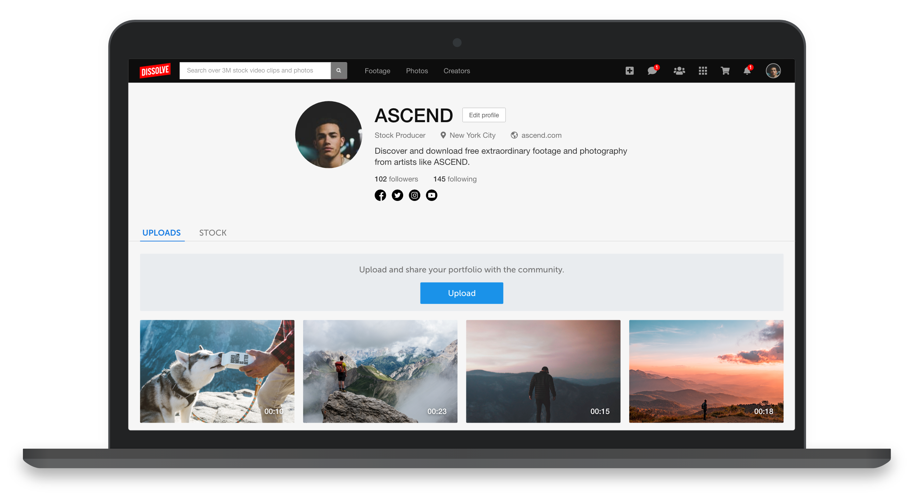

Dissolve Creators: Free media assets
Dissolve Creators is a web app where creatives can download free media assets, or upload their own to share with other creatives.
My Roles
- UX Research
- UI design
- Technical documentation
- Project management
- QA
Background
Dissolve sells digital media in a saturated market. Additionally, websites where people share and download free media have disrupted the market. Dissolve is adapting by integrating free media functionalities.
Target and Challenges
- Reinforce Dissolve's web traffic with creatives who utilize free media assets
- Provide an edge over competitors to attract creatives using existing applications
- Hedge against competitive market pricing by monetizing associated functionalities
Solution
There's no need to reinvent the wheel
There are many examples of web apps that host free media assets.
Because we wanted to achieve the same functionality, we researched existing applications. This allowed us to design custom features tailored to Dissolve’s business goals.
Uploading to the site
The upload tool lets creatives upload media to the site. They are allotted a minimum storage space, but they can subscribe to a higher storage plan to increase their storage limit.
Media management
Like existing apps, creatives will expect to manage their media on their profile page, so we implemented the same pattern.
Monetization tools gives us an edge
We resolved transactional pain points on existing apps by empowering creatives with the knowledge and tools to monetize their media assets.
Discovery
Creatives explore free media on the homepage. They can search for specific themes or browse popular categories.
Improving bounce rate on the search results page
A user test revealed testers leaving the search results page prematurely because they were reading “0 results” due to slow thumbnail loading speeds.

Developers will optimize thumbnail loading over time. In the interim, we can inform users that their results are loading and display placeholders.
Facilitating browsing improved UX and KPIs
The detail page lets creatives read detailed information about individual media assets, but they found it inconvenient going back and forth between the homepage and the detail page.
We replicated the detail page as a modal window and added arrows for browsing. This reduced the number of clicks it took to browse media and removed page loading, resulting in significantly improved media engagement metrics.
Results
The MVP is gaining momentum with over 1700 free digital media assets uploaded to Dissolve’s Creators. As of November 2021, Dissolve reports over 40,000 daily users and is increasing by 10% week over week. Contributors who sell digital media on Dissolve are also uploading free media assets. Next projects for Dissolve Creators include free editing and file conversion tools to attract a broader audience.